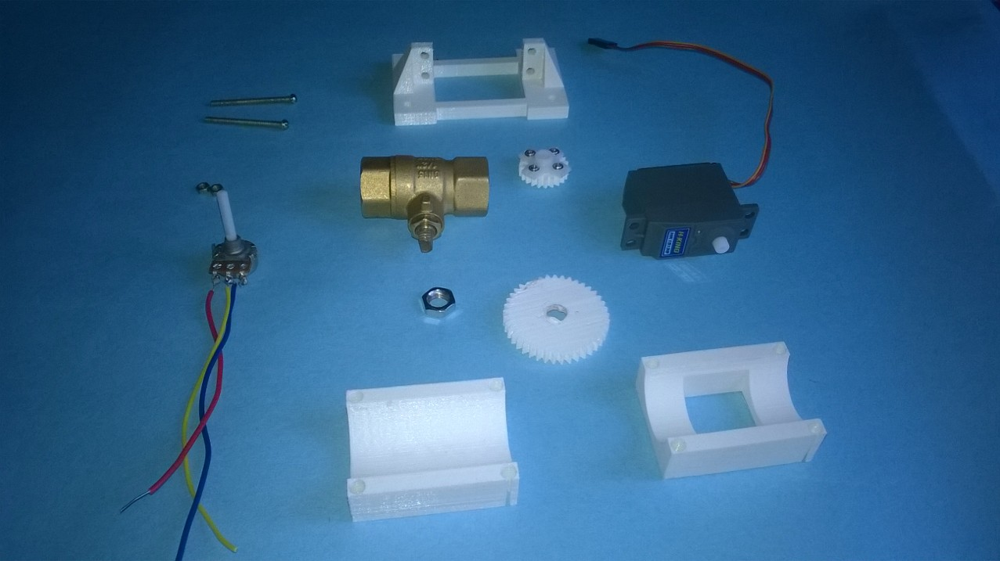

Background
I am going to solve a problem in my life ,I need to automate irrigation system in our farm,thats why iam going to make this "Timer Based Valve".
Objective
I want a Valve that should be automatically closed after specific time,User can set time using a probe.
Components Required
- 3/4" Ball Valve
- Servo Motor with 15Kg Torque
- 3D Printed Gears and Mechanical Structure
- Potention Meter 10K
- Fabduino
- Battery
How I Made
- Designed Mechanical Structure in antimony


- Fixed Valve in a 3D printed Structure
- Mounted Servo on Main Structure
- Connect Pot and Servo to Fabduino
- Program Fabduino
/* Program for Timer Based Valve
by Muhammed Jaseel P http://jaseel1.github.io
Nov 20 2016
*/
#include Servo.h
Servo myservo;//servo object to control servo
int potPin = A0; // select the input pin for the potentiometer
int val = 0; // variable to store the value coming from the sensor
int timerdelay;
void setup() {
myservo.attach(9);//Servo Connected to Pin 9
}
void loop() {
val = analogRead(potPin);
if(val<100)
{
timerdelay=5*1000*60://5 Minutes Delay
}
else if(val>=100 && val<=200)
{
timerdelay=10*1000*60;//10 Minutes delay
}
else if(val>200 && val<=300)
{
timerdelay=15*1000*60;//15 minutes Delay
}
else if(val>300 && val<=400)
{
timerdelay=20*1000*60;//20 Minutes Delay
}
else
{
timerdelay = 0;
}
myservo.write(180);//Open the Valve
delay(timerdelay);//Wait for specified delay
myservo.write(0);//Close the Valve
}